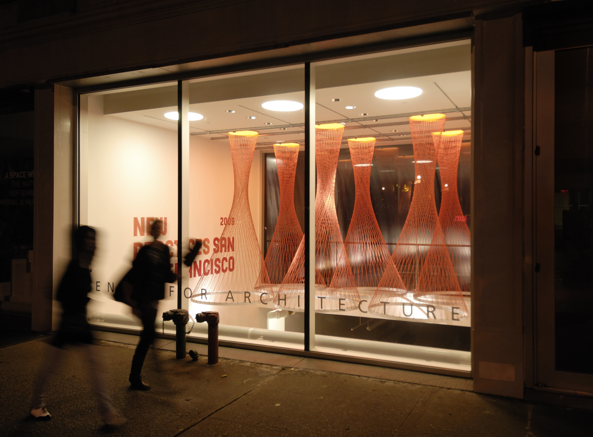
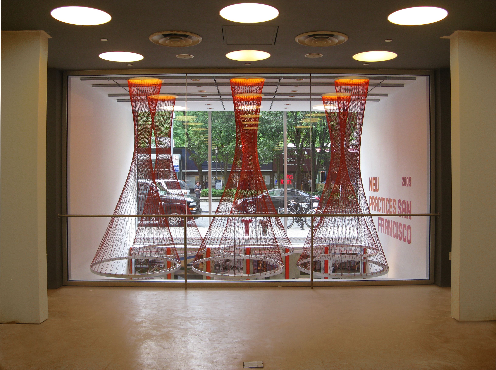
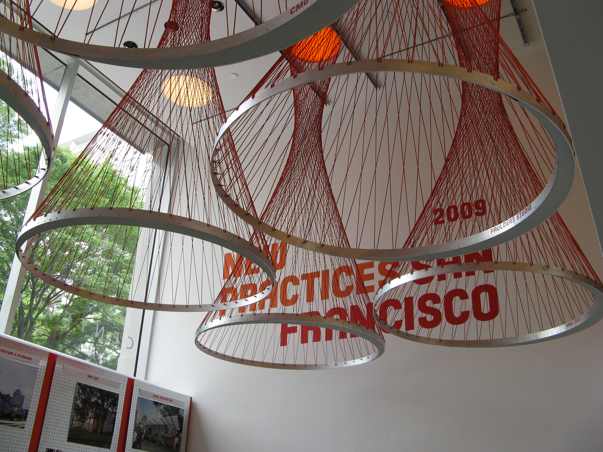
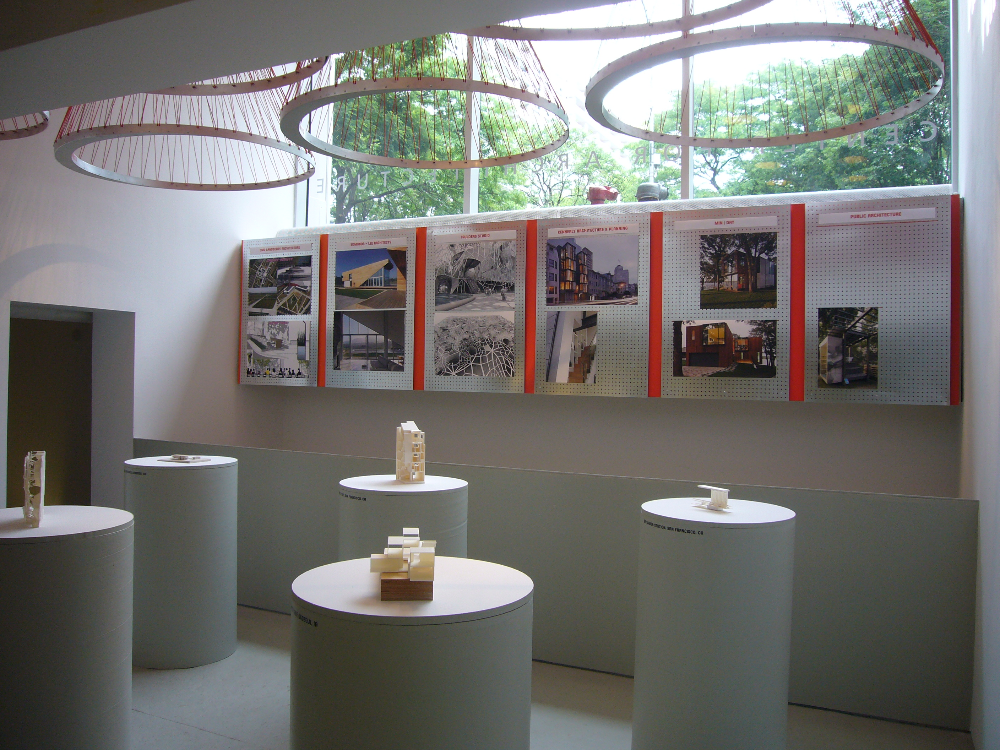
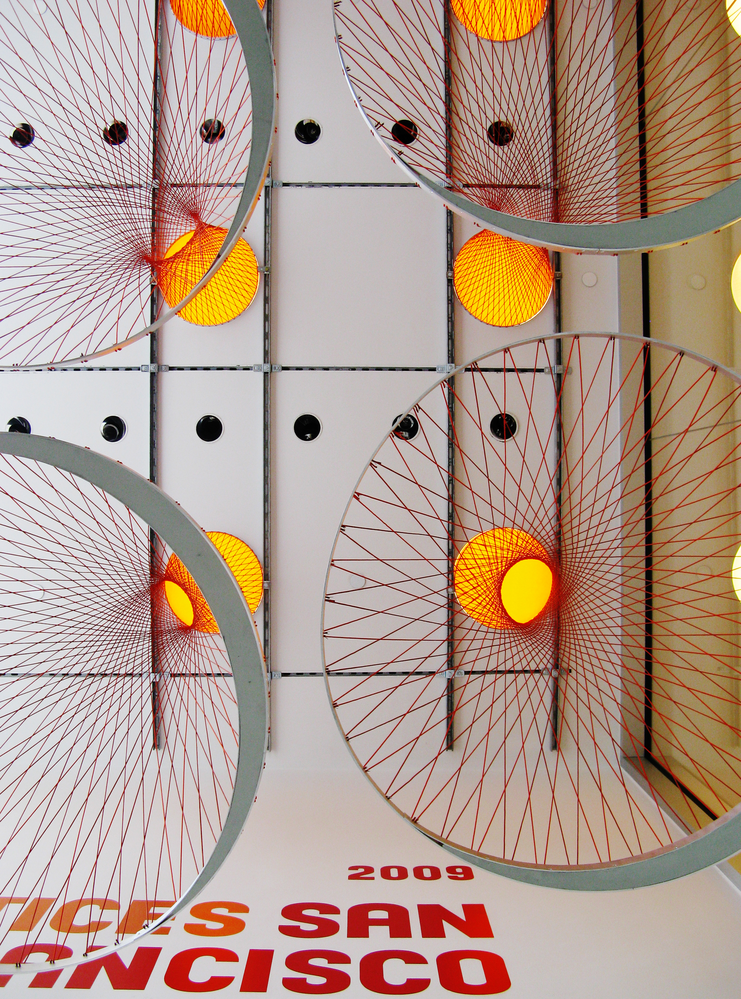
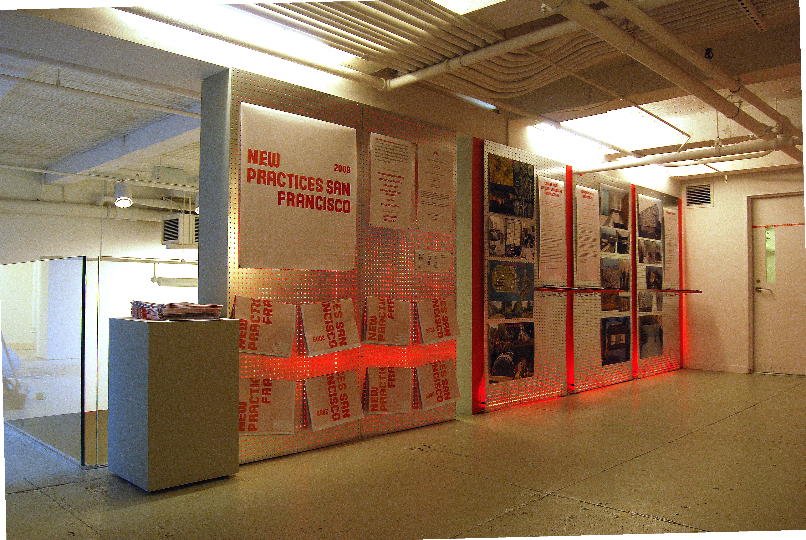
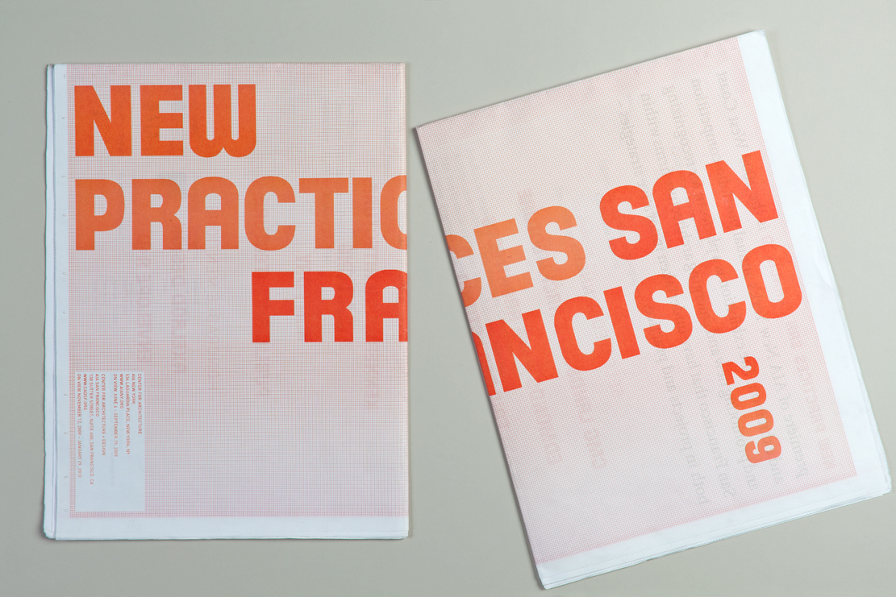
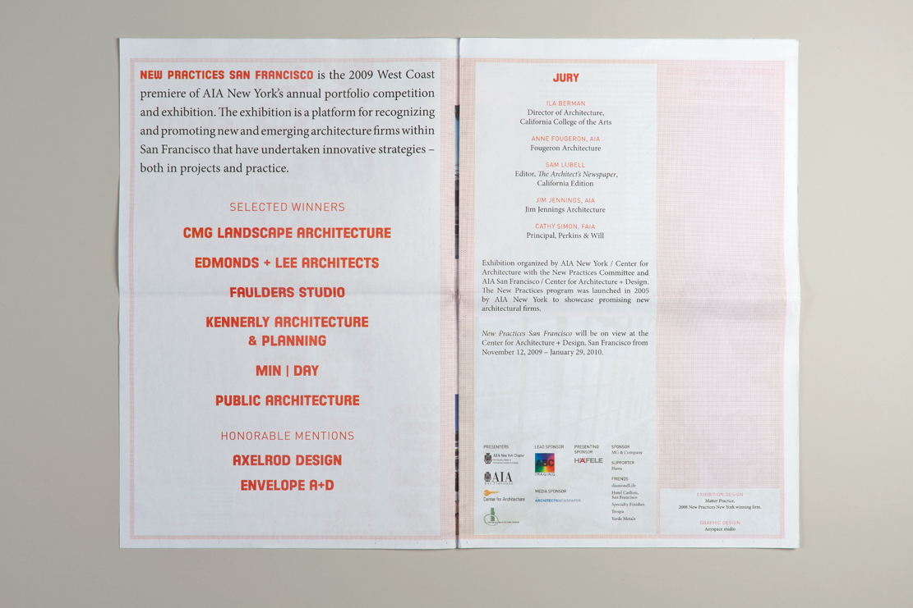
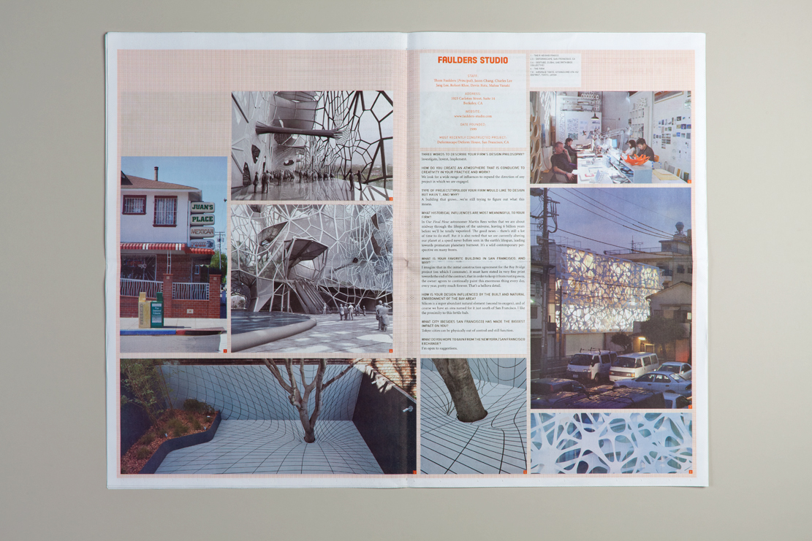
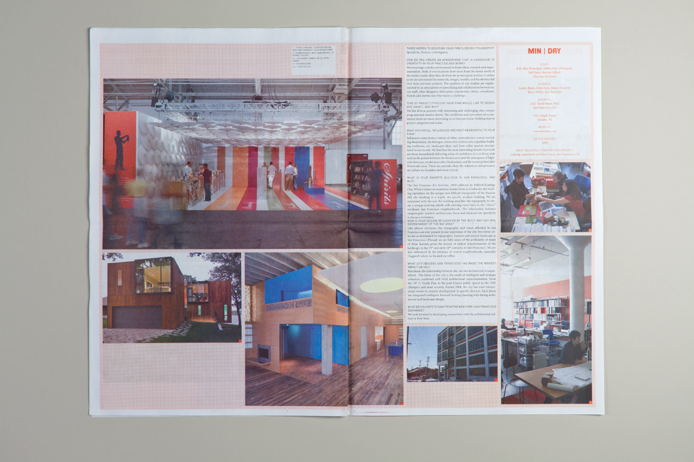

Get in touch.

Produced in collaboration with Matter Architecture Practice
http://www.matterpractice.net/
In 2005, the AIA New York launched the New Practices program to showcase promising new and emerging architectural firms. This year, the AIA San Francisco launched the West Coast debut of the competition and exhibition by highlighting the most innovative offices in the City by the Bay.




We were able to convince local builders and material shops to donate the materials we needed to build the exhibition.

We also found a news paper printer that was going out of business who printed a high volume of papers for us because they were going to throw away their paper stock anyway.



